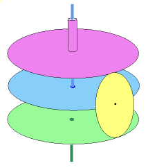

|
 |
 |
 |
3. Elementary rotary differential
|
 In this family of diagrams, meshing gears are represented by tangent circles. In this case the upper and lower gears and the pinion must be bevel gears, with teeth at a 45-degree angle to the face. Notice that since the three discs are stacked, the blue axle must be threaded through one of the outer ones. Such a device, usually incorporating several pinions, is called a Simple bevel-gear differential; the blue axle is the "spider shaft take-off." |
This mechanism is a rotary form of the straight-line
differential: imagine folding the purple and green racks
back and bending them into equal circular gears. The slider
folds over to a disc of the same radius; now the pinion
is attached to its circumference. Let us count counter-clockwise rotation as positive, since it correponds, in this interpretation, to the racks moving to the right. Since the three wheels have the same radius, their rotational speeds a (top), b (bottom) and c (central blue disc) must still satisfy c=(a+b)/2. |